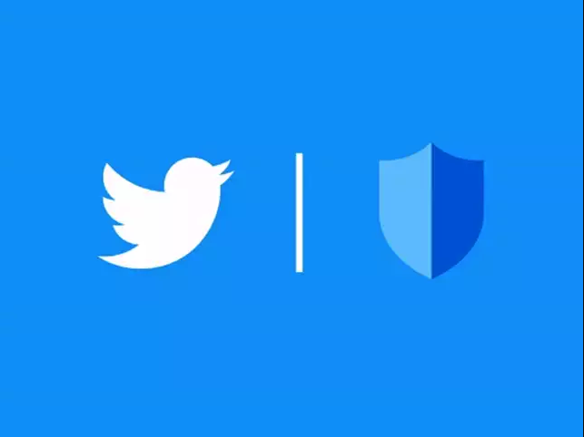

Twitter es una red social gratuita y cualquier persona puede crearse una cuenta o perfil para compartir opiniones. También se utiliza como fuente de información en tiempo real sobre temas de actualidad. Los usuarios de Twitter permanecen interconectados al publicar "tweets", que constan de 280 caracteres o menos y pueden contener ideas y varios tipos de información, como fotos, videos y enlaces a artículos.
Los usuarios pueden seguir a otras personas y cuentas en Twitter. Esto les permite ver los tweets de las personas que siguen en su línea de tiempo. Puedes seguir a amigos, celebridades, empresas, organizaciones y más para mantenerse al tanto de sus actualizaciones. Ademas witter se utiliza a menudo para descubrir noticias actuales y temas de tendencia. Muchas fuentes de noticias, periodistas y organizaciones de medios utilizan Twitter para compartir noticias y actualizaciones en tiempo real. En resumen, Twitter es una plataforma versátil que se utiliza para compartir información, establecer conexiones, mantenerse informado y participar en conversaciones sobre una amplia gama de temas. Su naturaleza de microblogging lo convierte en un lugar dinámico para la expresión y la interacción en línea.
|
 |